宿泊
予約
Search
熊野の過ごし方
周辺観光のご案内
悠久の営みの中で熊野信仰とともに歴史を刻み「紀伊山地の霊場と表詣道」は2004年にユネスコの世界遺産に登録されています。
「伊勢に七度」「熊野へ三度」
平安の時代には盛んに熊野御幸が行われ身分や階級を問わず、多くの人々が熊野に憧れをいだき、
救いを求め、蘇りを願って
異郷の地とも思える
山深いこの地を
目指しました。
熊野観光の
ご案内
人はなぜ熊野に惹かれるのか。
心の故郷が、ここにある

険しい山々を超え詣でる長き道のり、
それ自体が修行の道とされました
見渡す限りの自然に抱かれた
熊野の雄大な景色は、
今もなお昔の原型をとどめ、
訪れる人々の心を惹きつけています
-
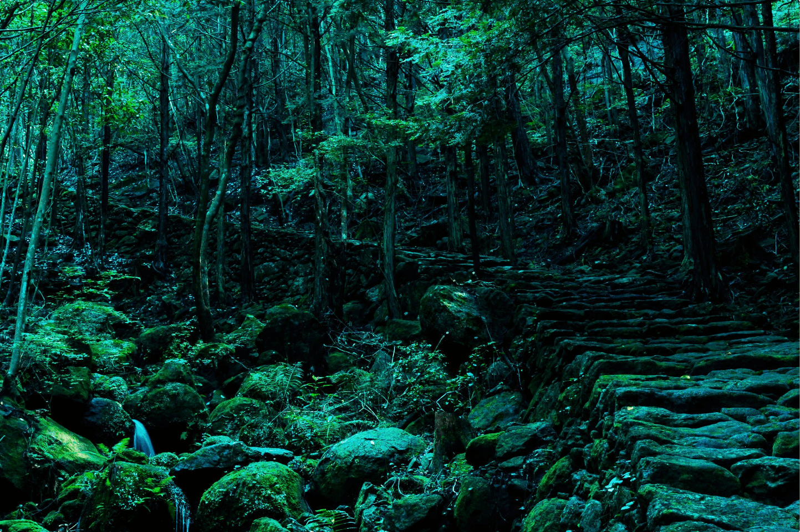
世界遺産 熊野古道
「歩くことが清めることに繋がる熊野詣」伊勢神宮から熊野三山へ続く伊勢路。険しい山々を超え詣でる長き道のりは、それ自体が修行の道とされました。見渡す限りの自然に抱かれた熊野の雄大な景色は、今もなお昔の原型をとどめ、訪れる人々の心を惹きつけています。
-
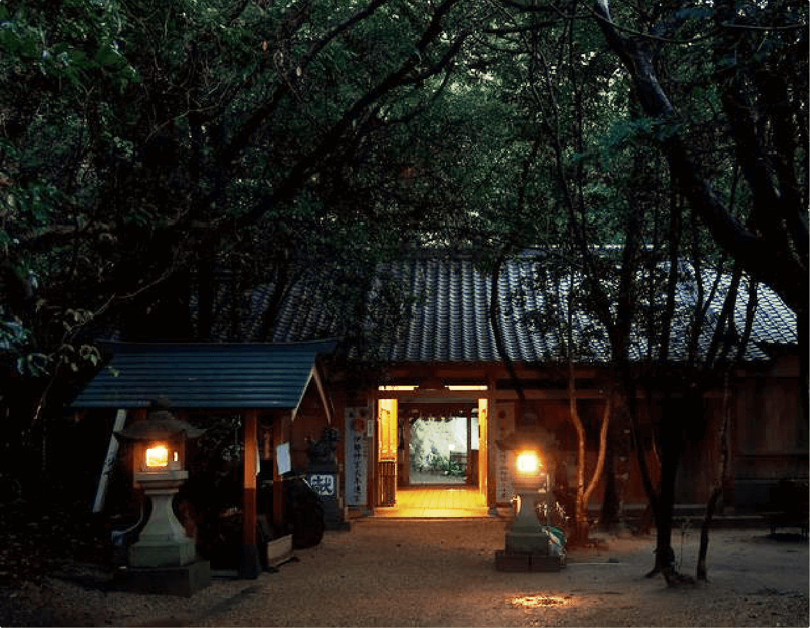
世界遺産 花の窟神社
「歩くことが清めることに繋がる熊野詣」伊勢神宮から熊野三山へ続く伊勢路。険しい山々を超え詣でる長き道のりは、それ自体が修行の道とされました。見渡す限りの自然に抱かれた熊野の雄大な景色は、今もなお昔の原型をとどめ、訪れる人々の心を惹きつけています。
-
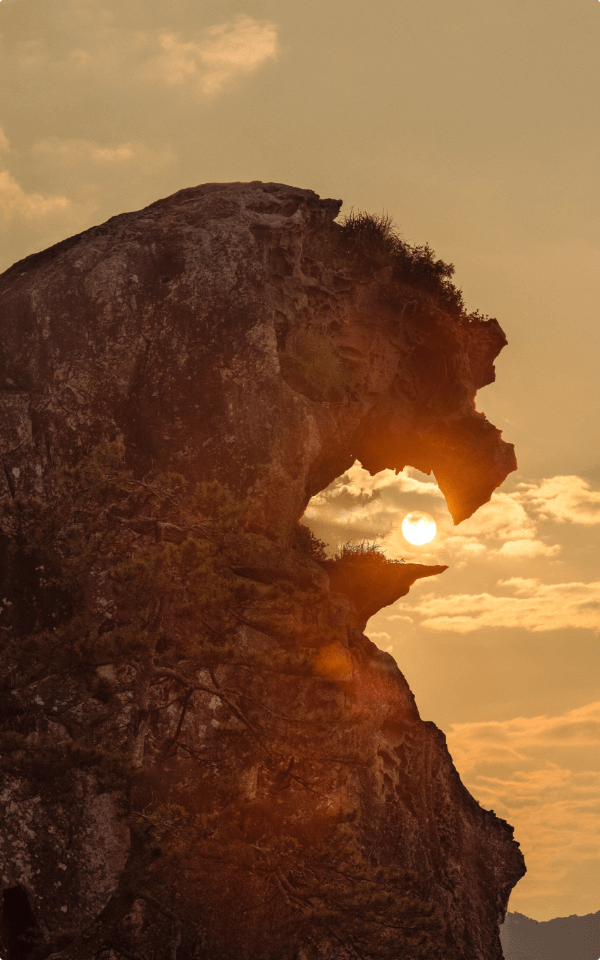
世界遺産 獅子岩
「歩くことが清めることに繋がる熊野詣」伊勢神宮から熊野三山へ続く伊勢路。険しい山々を超え詣でる長き道のりは、それ自体が修行の道とされました。見渡す限りの自然に抱かれた熊野の雄大な景色は、今もなお昔の原型をとどめ、訪れる人々の心を惹きつけています。
-
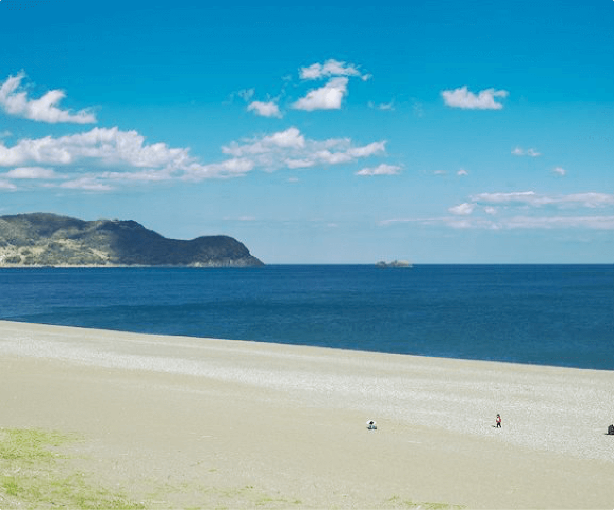
世界遺産 七里御浜
「歩くことが清めることに繋がる熊野詣」伊勢神宮から熊野三山へ続く伊勢路。険しい山々を超え詣でる長き道のりは、それ自体が修行の道とされました。見渡す限りの自然に抱かれた熊野の雄大な景色は、今もなお昔の原型をとどめ、訪れる人々の心を惹きつけています。
-
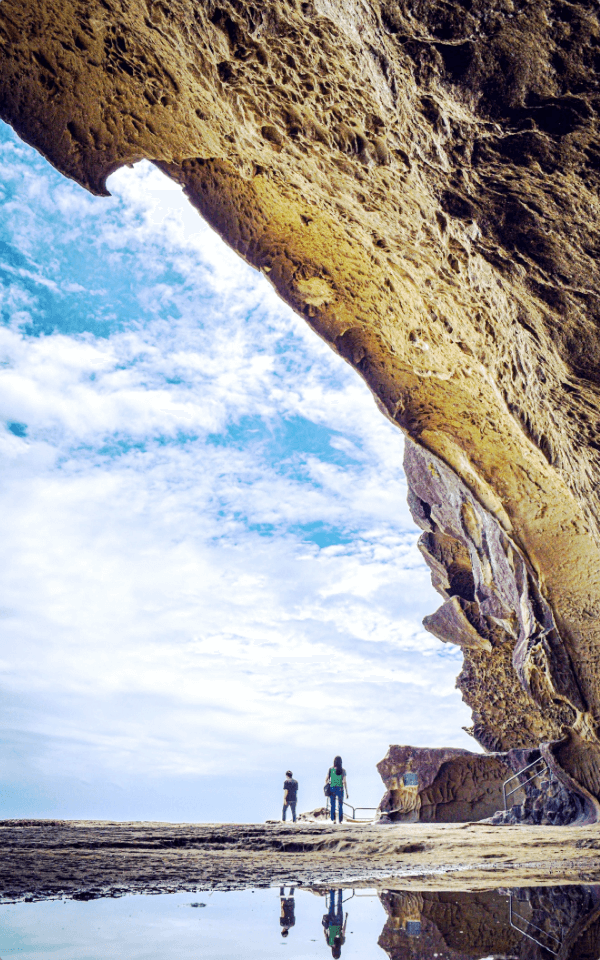
世界遺産 鬼ヶ城
「歩くことが清めることに繋がる熊野詣」伊勢神宮から熊野三山へ続く伊勢路。険しい山々を超え詣でる長き道のりは、それ自体が修行の道とされました。見渡す限りの自然に抱かれた熊野の雄大な景色は、今もなお昔の原型をとどめ、訪れる人々の心を惹きつけています。
-
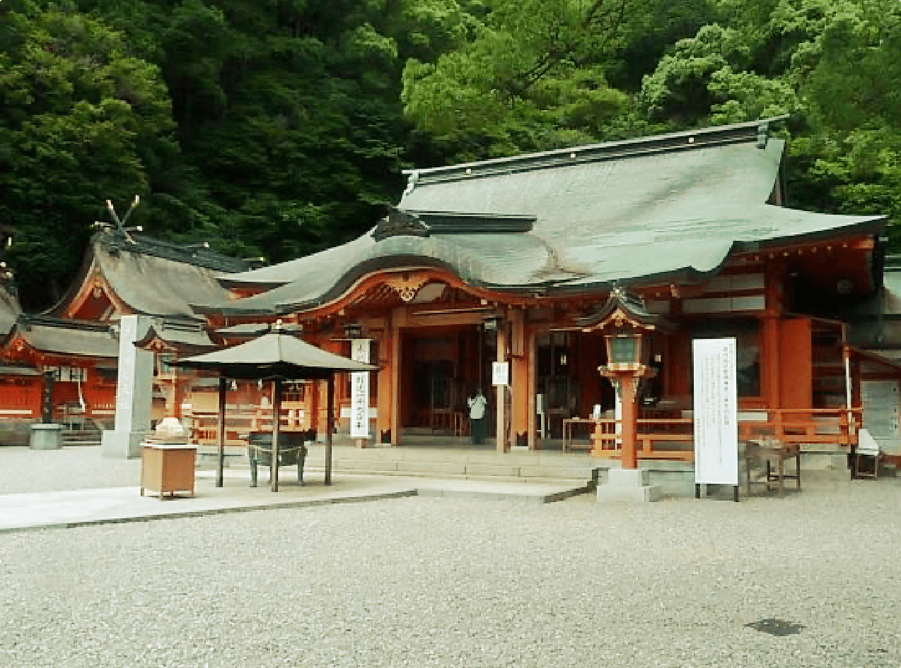
【熊野三山】
世界遺産 熊野那智大社「歩くことが清めることに繋がる熊野詣」伊勢神宮から熊野三山へ続く伊勢路。険しい山々を超え詣でる長き道のりは、それ自体が修行の道とされました。見渡す限りの自然に抱かれた熊野の雄大な景色は、今もなお昔の原型をとどめ、訪れる人々の心を惹きつけています。
-
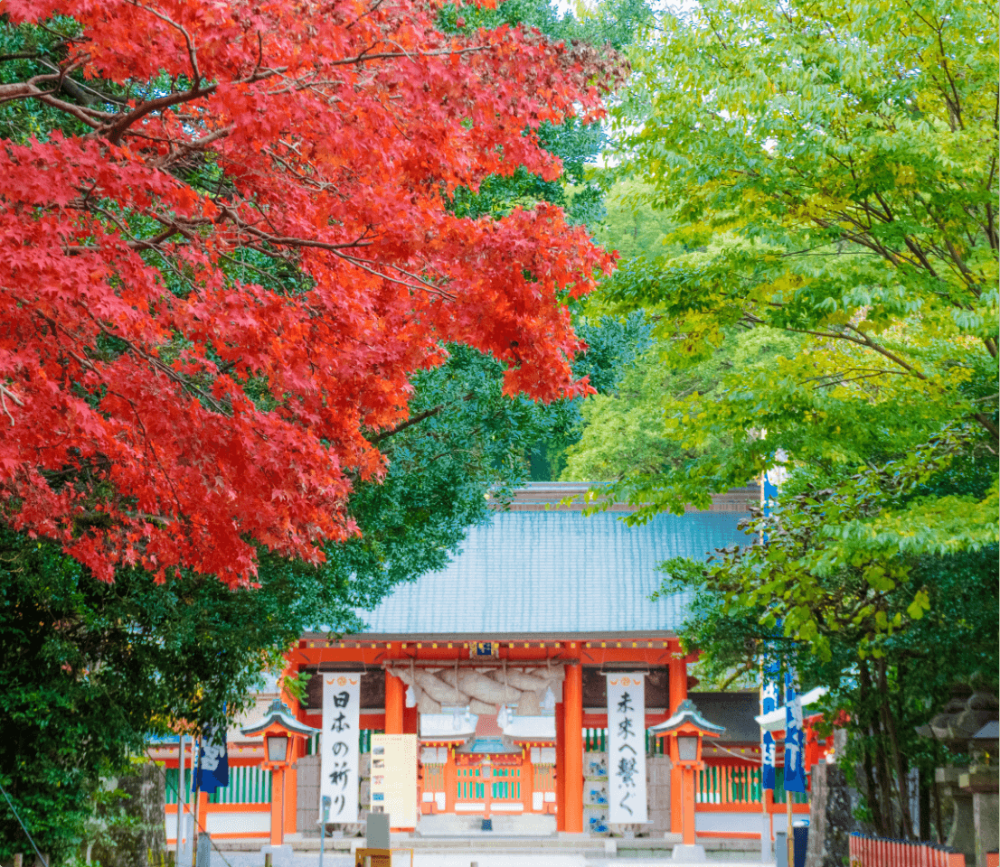
【熊野三山】
世界遺産 速玉大社「歩くことが清めることに繋がる熊野詣」伊勢神宮から熊野三山へ続く伊勢路。険しい山々を超え詣でる長き道のりは、それ自体が修行の道とされました。見渡す限りの自然に抱かれた熊野の雄大な景色は、今もなお昔の原型をとどめ、訪れる人々の心を惹きつけています。
-
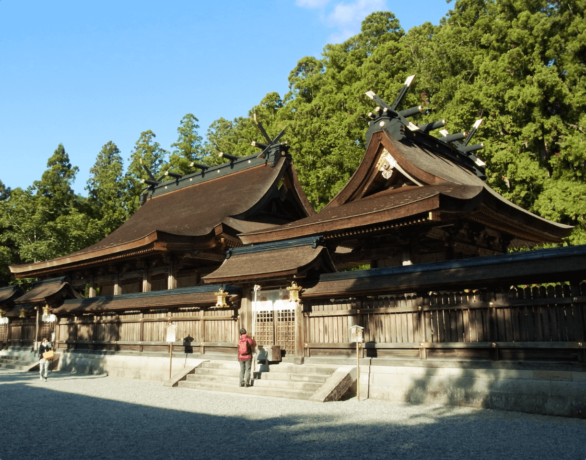
【熊野三山】
世界遺産 世界遺産本宮大社「歩くことが清めることに繋がる熊野詣」伊勢神宮から熊野三山へ続く伊勢路。険しい山々を超え詣でる長き道のりは、それ自体が修行の道とされました。見渡す限りの自然に抱かれた熊野の雄大な景色は、今もなお昔の原型をとどめ、訪れる人々の心を惹きつけています。
-
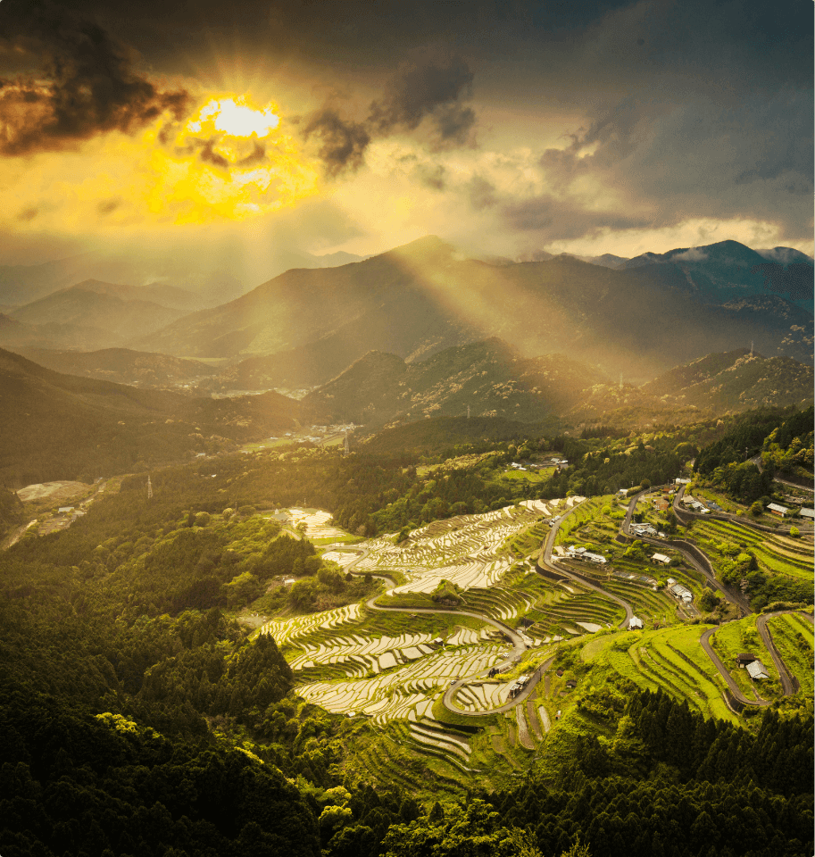
丸山千枚田
「歩くことが清めることに繋がる熊野詣」伊勢神宮から熊野三山へ続く伊勢路。険しい山々を超え詣でる長き道のりは、それ自体が修行の道とされました。見渡す限りの自然に抱かれた熊野の雄大な景色は、今もなお昔の原型をとどめ、訪れる人々の心を惹きつけています。
-
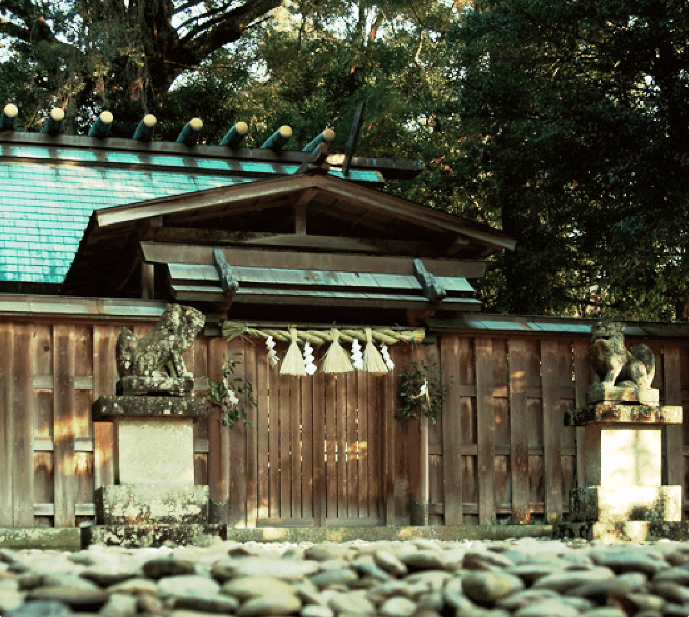
産田神社
「歩くことが清めることに繋がる熊野詣」伊勢神宮から熊野三山へ続く伊勢路。険しい山々を超え詣でる長き道のりは、それ自体が修行の道とされました。見渡す限りの自然に抱かれた熊野の雄大な景色は、今もなお昔の原型をとどめ、訪れる人々の心を惹きつけています。
-
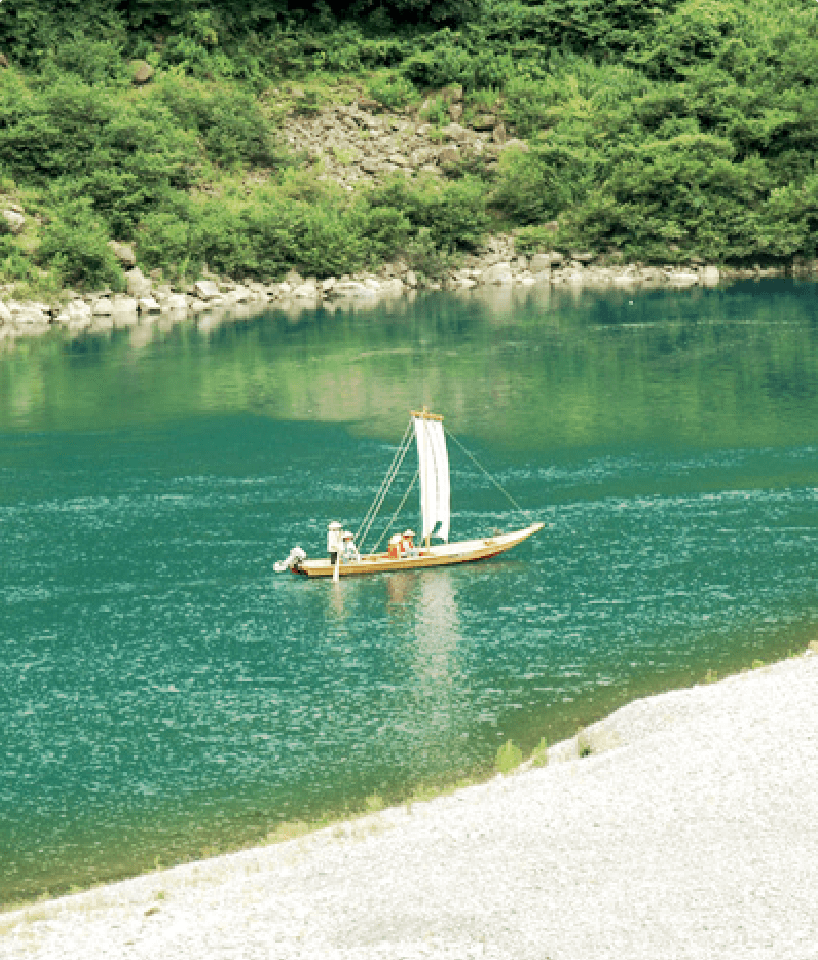
三反帆
「歩くことが清めることに繋がる熊野詣」伊勢神宮から熊野三山へ続く伊勢路。険しい山々を超え詣でる長き道のりは、それ自体が修行の道とされました。見渡す限りの自然に抱かれた熊野の雄大な景色は、今もなお昔の原型をとどめ、訪れる人々の心を惹きつけています。
-
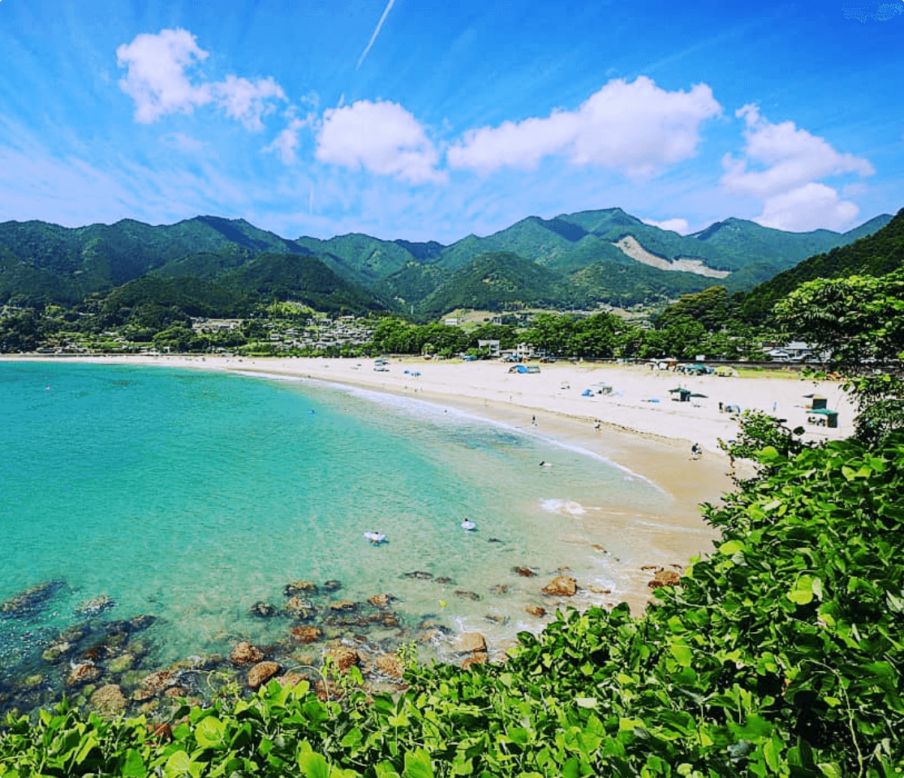
新鹿海水浴場
「歩くことが清めることに繋がる熊野詣」伊勢神宮から熊野三山へ続く伊勢路。険しい山々を超え詣でる長き道のりは、それ自体が修行の道とされました。見渡す限りの自然に抱かれた熊野の雄大な景色は、今もなお昔の原型をとどめ、訪れる人々の心を惹きつけています。
-
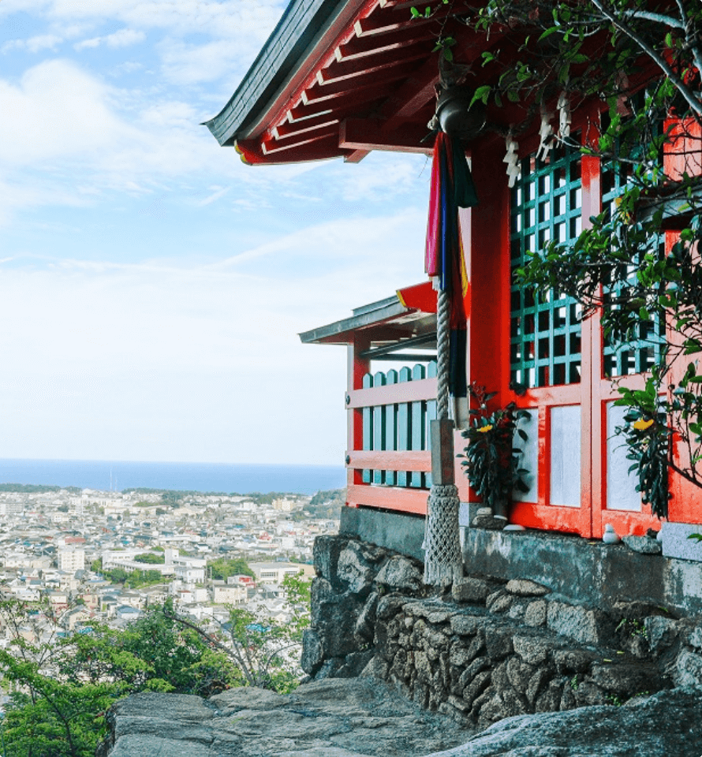
神倉神社
「歩くことが清めることに繋がる熊野詣」伊勢神宮から熊野三山へ続く伊勢路。険しい山々を超え詣でる長き道のりは、それ自体が修行の道とされました。見渡す限りの自然に抱かれた熊野の雄大な景色は、今もなお昔の原型をとどめ、訪れる人々の心を惹きつけています。
-
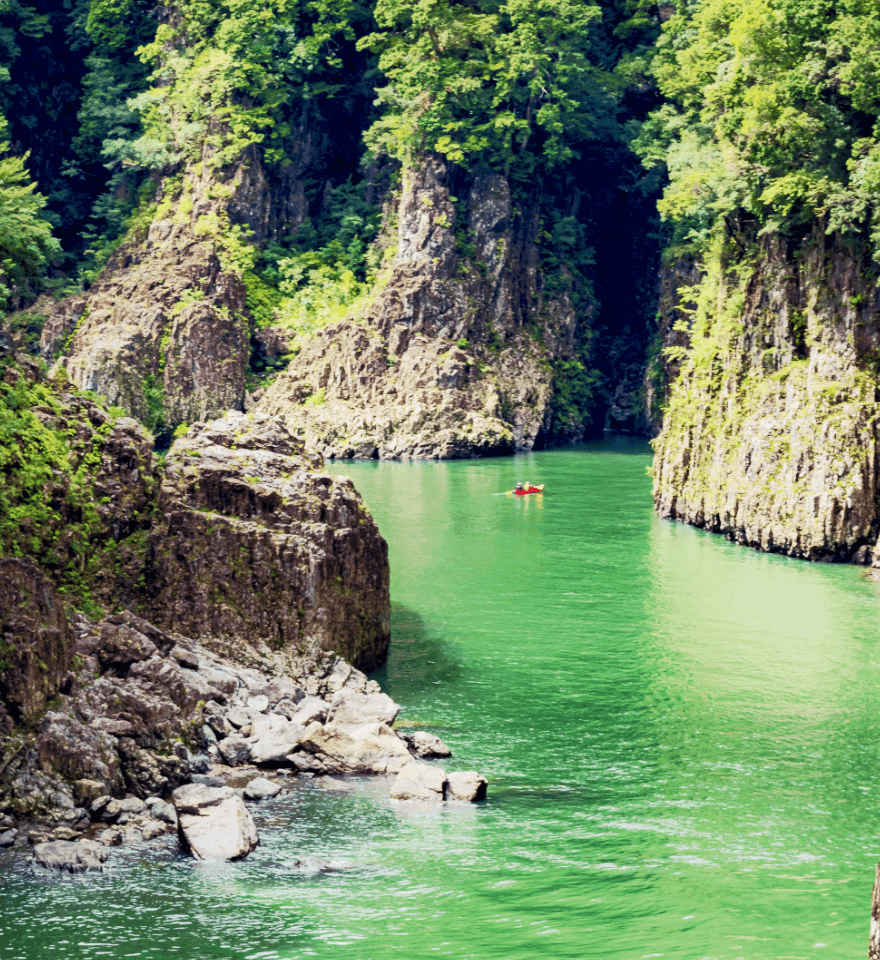
瀞峡
「歩くことが清めることに繋がる熊野詣」伊勢神宮から熊野三山へ続く伊勢路。険しい山々を超え詣でる長き道のりは、それ自体が修行の道とされました。見渡す限りの自然に抱かれた熊野の雄大な景色は、今もなお昔の原型をとどめ、訪れる人々の心を惹きつけています。
-
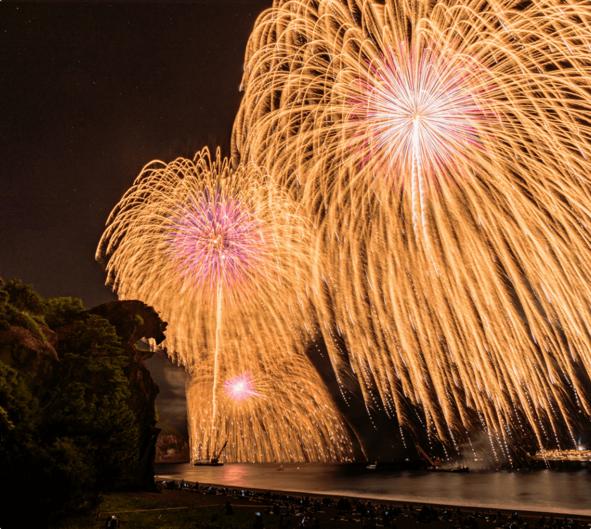
熊野大花火大会
「歩くことが清めることに繋がる熊野詣」伊勢神宮から熊野三山へ続く伊勢路。険しい山々を超え詣でる長き道のりは、それ自体が修行の道とされました。見渡す限りの自然に抱かれた熊野の雄大な景色は、今もなお昔の原型をとどめ、訪れる人々の心を惹きつけています。
-
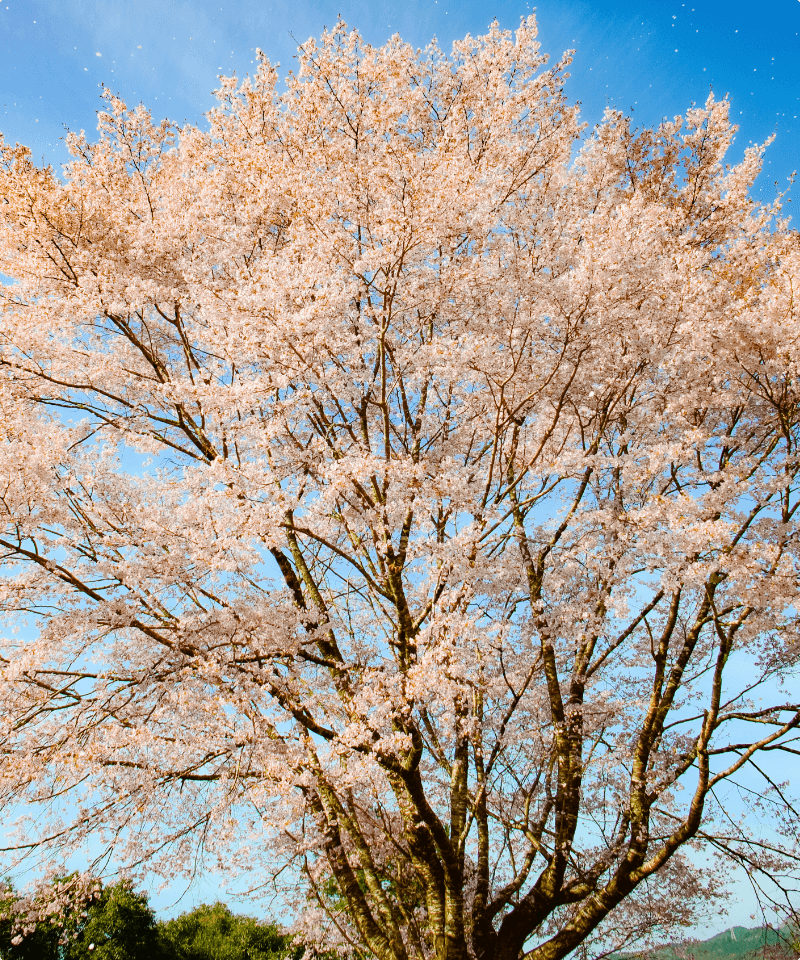
クマノザクラ
「歩くことが清めることに繋がる熊野詣」伊勢神宮から熊野三山へ続く伊勢路。険しい山々を超え詣でる長き道のりは、それ自体が修行の道とされました。見渡す限りの自然に抱かれた熊野の雄大な景色は、今もなお昔の原型をとどめ、訪れる人々の心を惹きつけています。